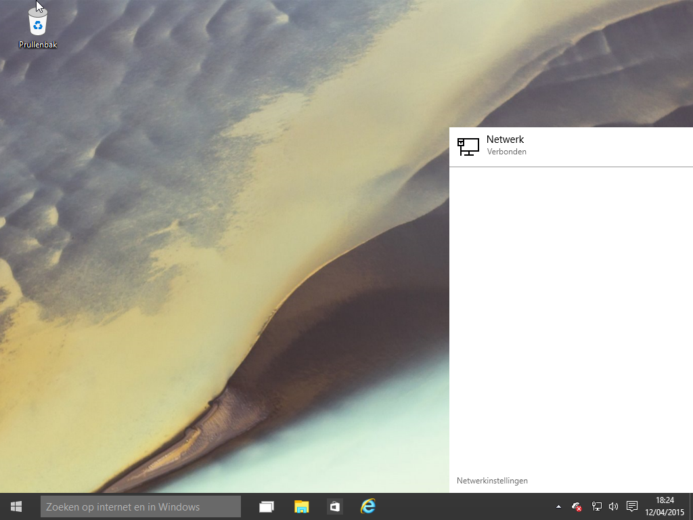

<map name="map">
<!-- #$-:Image map file created by GIMP Image Map plug-in -->
<!-- #$-:GIMP Image Map plug-in by Maurits Rijk -->
<!-- #$-:Please do not edit lines starting with "#$" -->
<!-- #$VERSION:2.3 -->
<!-- #$AUTHOR:glenn -->
<area shape="rect" coords="1,729,49,766" href="start-small.html" />
<area shape="rect" coords="423,729,469,767" href="verkenner.png" />
<area shape="rect" coords="523,727,564,767" href="ie-settings.png" />
<area shape="rect" coords="919,731,951,766" href="meldingen.png" />
<area shape="rect" coords="891,730,918,765" href="soundbar.png" />
<area shape="rect" coords="667,697,791,722" href="settings-ethernet.png" />
</map>
